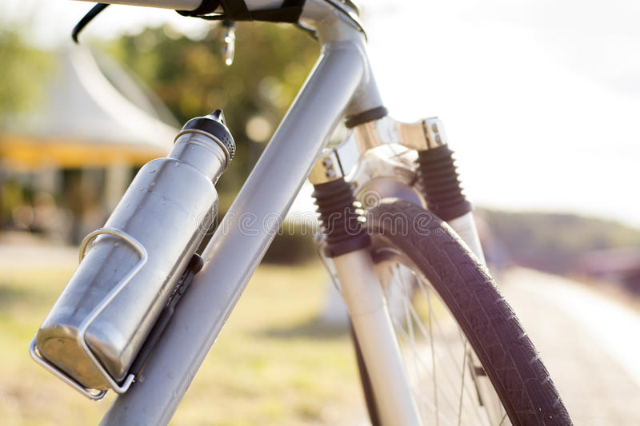
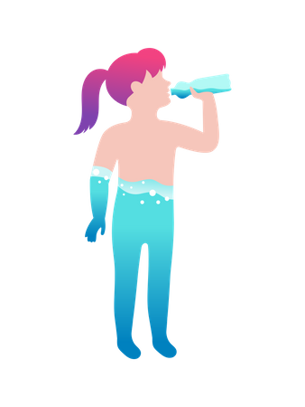
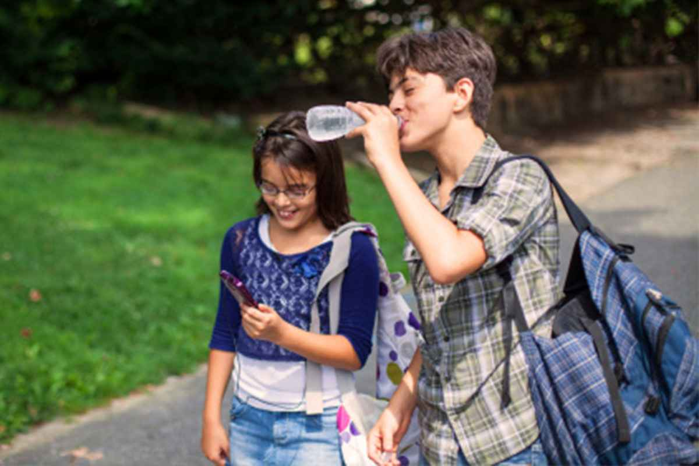
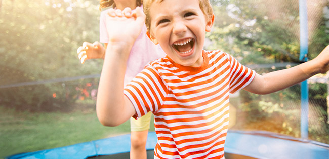

Why hydration matters?
Sweat drips down the faces of the Tour de France riders while they sprint to the race finish on the Champs-Elysee each July, crouched over their handlebars, pain etched on their faces…
Seen by many as the pinnacle of sporting endurance, 'Le Tour' is a race were the rider’s average speed is 40km/h over thousands of kilometers of challenging terain.
Eddy Merckx, who won the Tour de France four times in the 1970s, said:
Cyclers live with pain. If you can't handle it, you'll win nothing.
You’ll also win nothing without superhuman fitness levels, good nutrition and around 10 liters of fluid on average per stage – the last to replace the seven litre of fluids that you lose, on average, through sweat during each stage.

Refresh your ride
Of course, we’re not all measuring Alps in lycra, and you don’t have to drink this much water during your casual Sunday afternoon cycle or jog around the local park.
All the same, adequate hydration both before and during exercise is critical for all of us. It helps
regulate body temperature, replace fluid, and restore water levels after exercise.
When the temperature climbs above 30°C, dehydration can quickly lead to a 2% loss of body weight and decreased endurance and skill. Dial that up to a 3%, and you’re
losing muscular power and strength.
The more active you are, the greater your need of water to sustain peak performance.
Tour de France cyclists tend to consume waterbased drinks that contain carbohydrates, electrolytes and vitamins. But they are exercising extremely intensively for hours on end.
For the rest of us plain old H2O will do. We’re losing more water than minerals through sweat during casual exercise, so focus on replacing the fluids you lose with water only.
Hydration for everyone

You can do so while you watch your heroes flash by during the Tour de France, for instance. Nestle Waters mineral water brand Vittel became an official Tour partner in 2008 and distributes water to spectators along the route each year – in the spirit of sharing, vitality and fun.
Our partnership with the Tour de France stems dates back to 1923, when Perrier first supplied water to the race.
Nestlé is committed to
promoting hydration for everyone
, in line with our
company purpose and in support of the Unitied Nations Sustainable Development Goals.
Your water needs differ depending on how old are you, where you live, what you eat, and how much exercise you take. But either you’re pushing the pedals, sitting at a desk, or cheering on your heroes on the Champs Elysees, it’s
vital that you stay cool.
Hydration for kids

A large part of our body weight is made up of water – the average adult is 60% H2O.
But for children the figure is much higher: nearly 80% water at birth and about 75% water by the time they reach primary school age.
Due to all their activity, children are also more susceptible to dehydration because they tend to lose water more quickly than adults.
Kids also tend to forget that they are thirsty, as they are too busy being, well, kids! Exploring the world, having fun and forgetting to tell us that they need to rehydrate.
Research has shown that this can have some adverse health effects on children including on their mental performance (e.g. Goodman et al. 2013).